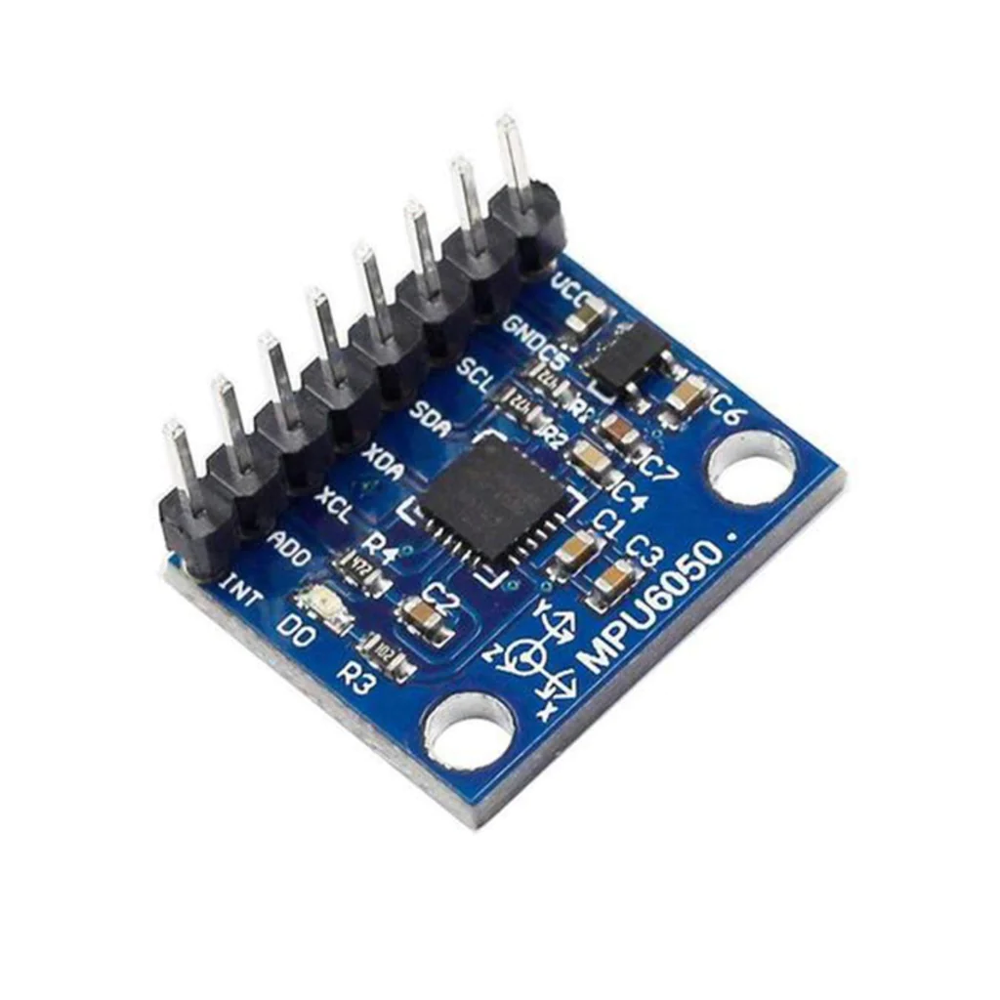

<!DOCTYPE html>
<html lang="en">

<title> Tiger Strake's Digital Fabrication</title>
<link href="https://cdn.jsdelivr.net/npm/bootstrap@5.1.1/dist/css/bootstrap.min.css" rel="stylesheet">
<link href="../style.css" rel="stylesheet">


<nav class="navbar navbar-expand-sm navbar-light background-image">
  <div
    style="align-items: center; justify-content: center"
    class="container-fluid"
  >
    <h3 class="nav-title"> PHYS-S-12: Intro to Digital Fabrication</h3>
    <div class="navbar-nav">
      <h4></h4>
    </div>
  </div>
</nav>
<nav class="navbar navbar-expand-sm navbar-light background-image">
  <div class="container-fluid d-flex justify-content-between">
      <h4><a class="nav-link" href="../index.html" style="color:#EBF2FA;">Home</a></h4>
      <h4><a class="nav-link" href="https://nathanmelenbrink.github.io/intro-dig-fab/index.html" style="color:#EBF2FA;">My class</a></h4>
      <h4><a class="nav-link" href="../about.html" style="color:#EBF2FA;">About</a></h4>
  </div>
</nav>
</html>

<body>
  <style>
    body {
      background-color: #486484;
    }
  </style>

<xmp style="display:none;">
<br> 
<b>
<font size="5">
Input devices
</font>
</b>
<font size="4">

<br>
Today's assignment was to use input devices (aka sensors) to measure something. We built our own sensor and also got to using 
an off-the-shelf gyroscope.
<br>
For the DIY-sensor I decided to build something useful for our final project, a sensor that can 
determine when the rocket takes off. To do so I 3d modeled a tweezer that relies on a compliant mechanism
to stay open. When pressure is applied the two copper ends touch and the circut is closed. 
The 3d model looks like this: 


<br>

you can download the .stl file 
<a href="compliant sensor touch v1.stl" download>here</a>
and the .step file 
<a href="compliant sensor touch v1.step" download>here.</a>
<br>
<br>
This is how the sensor works:
<video with="600" height="380" controls>
  <source src="IMG_6411 2.MOV" type="video/mp4">


For the second part of the assignment I decided to use a sensor that would be useful for the final project. To control our rocket
we need to know where it is located and which direction it is pointing. For this we will use a 6-axis Gyroscope, the MPU6050. It can measure acceleration
in all 3 spacial axis as well as yaw, pitch and roll. 
<br>
This is the sensor we used:
<br>

<br>
<br>
The MPU always knows its relative rotation. This makes it easy to output an accurate measurement to the serial montior in degrees. To ensure that all measurements are accurate, we used an anglefinder and set it multiple values. This is a table showing the acutal angle vs the measured angle. 
<br>
<br>


</xmp>
</body>

<script src="../strapdown.js"></script>
<script src="https://cdn.jsdelivr.net/npm/bootstrap@5.0.2/dist/js/bootstrap.bundle.min.js" ></script>

</html>